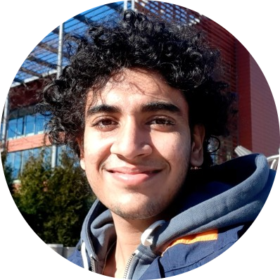

|  |
Advaith BalaStudent at University of Illinois, Urbana Champaign. I am a Sophomore at UIUC studying Computer Engineering. I like cricket and making music on the piano. |
Coursework : Computer Systems (OS & Kernel) Engineering, Computer Architecture, Applied Parallel Programming, Algorithms & Data Structures, Digital Signal Processing, Linear Algebra, Real Analysis
Spearheaded data science research to create a novel deep CNN model for cataract detection using phone images
Formulated an Iris-Cropping mask algorithm to shrink patient dataset size by 200 times without loss in quality
Paralellized image prepossessing filters to decrease model run-time on the IOS app to 2.3 seconds
Formulated an ML generated algorithm to set premium and detect fraud in auto insurance (Python, TensorFlow)
Conducted research with boosting algorithms (XGBoost, AdaBoost) to fit real-world data to 94.603%
Built GUI-based business intelligence dashboard (HTML CSS / SQL) to present high-level analytics
Obtained remote access to client’s historical data on cloud for solar inverters at a site in Tucson, AZ
Evaluated annual energy yield behavior of vertically mounted bi-facial modules (Python, Excel Macros)
Used FPGA with NIOS II as SoC to generate VGA signals, wrote custom Wii Remote hardware drivers
Wrote a novel Python-to-SystemVerilog graphical library to convert GIF images to animated VGA game sprites
Created robust Game Difficulty AI powered by random number seed generated by user input
Built an analog theremin instrument from scratch and created 3D-printed robotic arm to play it
Formulated python code that parses a MIDI file to an array that maps music notes to servo motor angles